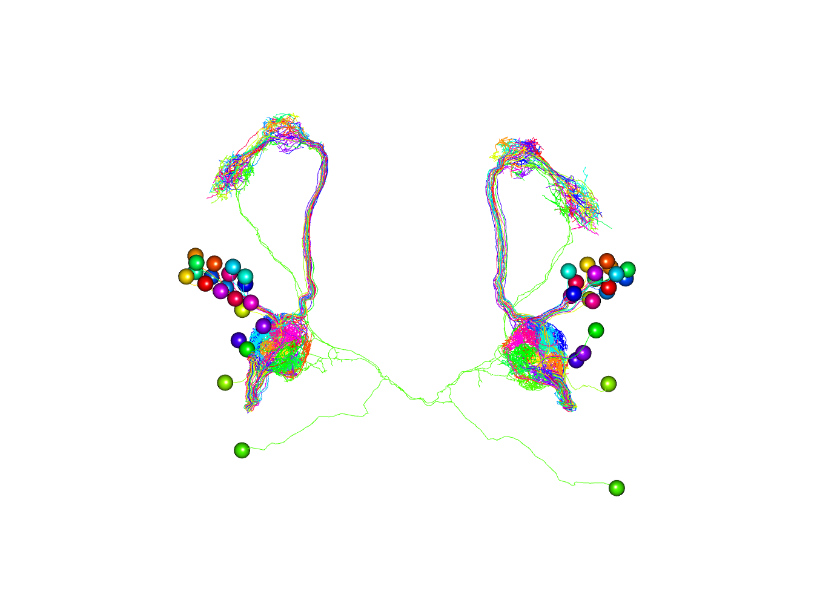

Introductory Example - Drosophila Larval Olfaction
Gregory Jefferis
2021-02-28
Source:vignettes/example-drosophila-larva-olfactory-system.Rmd
example-drosophila-larva-olfactory-system.RmdIntro
This example is designed to introduce some of the basic features of the catmaid package and the NeuroAnatomy Toolbox (nat) on which it builds.
The sample data is from an EM connectomics study of the Drosophila first instar larva by Albert Cardona and colleagues as submitted to https://virtualflybrain.org and visible at https://catmaid.virtualflybrain.org
Connecting
First we need to specify which CATMAID server we will use. This will be the default for the rest of the session.
library(catmaid)
#> Loading required package: httr
#> Loading required package: nat
#> Loading required package: rgl
#> Registered S3 method overwritten by 'nat':
#> method from
#> as.mesh3d.ashape3d rgl
#>
#> Attaching package: 'nat'
#> The following object is masked from 'package:rgl':
#>
#> wire3d
#> The following objects are masked from 'package:base':
#>
#> intersect, setdiff, union
conn=catmaid_login(server="https://l1em.catmaid.virtualflybrain.org")There is also a convenience function which you could use to do the same thing:
conn=vfbcatmaid("l1em")for the public VFB servers.
Fetching neurons
Now let’s fetch the peripheral olfactory sensory neurons, reading them into a neuronlist() object called orns.
orns=read.neurons.catmaid("name:ORN (left|right)")We can also add some useful metadata.
orns[,'side']= factor(sub(".* ORN ", "", orns[,'name']))
orns[,'Or']= factor(sub(" ORN.*", "", orns[,'name']))We calculate both the side of the brain and the odorant receptor expressed by the olfactory sensory neurons. These two variables are stored as columns in a table (i.e. data.frame()) that is an attribute of the orns neuronlist object.
The catmaid package builds on nat, a general purpose R neuroanatomy package. You may want to read the nat documentation to learn about how nat handles single neurons, collections of neurons (called neuronlists) and their associated metadata.
Now repeat for the the second order projection neuron (PN) partners. Note use of search by annotation. See catmaid_skids() documentation for details.
# searches for annotation "ORN PNs"
pns=read.neurons.catmaid("ORN PNs")
pns[,'Or']= factor(sub(" PN.*", "", pns[,'name']))
pns[,'side']= factor(sub(".*(left|right)", "\\1", pns[,'name']))Plotting neurons
Now let’s plot both sets of neurons, colouring by odorant receptor.
plot3d(orns, col=Or)
# note that we plot somata with a radius of 1500 nm
plot3d(pns, col=Or, soma=1500)
# set 3D viewer to frontal aspect
nview3d('frontal')
Going further
Finding synaptic partners
Now we can directly identify the downstream partner neurons of the ORNs and plots them in 3D coloured by their synaptic strength. It then carries out morphological clustering with NBLAST and plots the partner neurons according to those clusters.
Let’s find all the ORN downstream partners with at least 2 synapses
orn_partners=catmaid_query_connected(orns[,'skid'], minimum_synapses = 2)
# keep the ones not already in our set of PNs
# there are lots!
non_pn_downstream_ids=setdiff(unique(orn_partners$outgoing$partner), pns[,'skid'])
# download and plot those neurons
non_pn_downstream=read.neurons.catmaid(non_pn_downstream_ids)Note that although we exclude the downstream PNs

Plot by connection strength
Plot, but colouring partners by number of synapses they receive from ORNs First collect synapse numbers:
library(dplyr)
#>
#> Attaching package: 'dplyr'
#> The following objects are masked from 'package:nat':
#>
#> intersect, setdiff, union
#> The following objects are masked from 'package:stats':
#>
#> filter, lag
#> The following objects are masked from 'package:base':
#>
#> intersect, setdiff, setequal, union
totsyndf=orn_partners$outgoing %>%
group_by(partner) %>%
summarise(totsyn=sum(syn.count)) %>%
arrange(desc(totsyn))
hist(totsyndf$totsyn)Now do the plot
# matlab style palette
jet.colors <-
colorRampPalette(c("#00007F", "blue", "#007FFF", "cyan",
"#7FFF7F", "yellow", "#FF7F00", "red", "#7F0000"))
# plot colouring by synapse number on a log scale
# note that it is necessary to convert totsyndf$partner to a character
# vector to ensure that they are not treated as integer indices
plot3d(as.character(totsyndf$partner), db=c(pns, non_pn_downstream),
col=jet.colors(10)[cut(totsyndf$totsyn, breaks = 2^(0:10))], soma=1000)
NBLAST cluster
Now let’s cluster these other connected neurons morphologically. This is often an efficient way to group neurons that may have distinct functions.
library(nat.nblast)
# convert to nblast-compatible format
# nb also convert from nm to um, resample to 1µm spacing and use k=5
# nearest neighbours of each point to define tangent vector
non_pn_downstream.dps=dotprops(non_pn_downstream/1e3, k=5, resample=1)
# now compute all x all NBLAST scores and cluster
non_pn_downstream.aba=nblast_allbyall(non_pn_downstream.dps)
non_pn_downstream.hc=nhclust(scoremat = non_pn_downstream.aba)
#> The "ward" method has been renamed to "ward.D"; note new "ward.D2"Plot result of clustering as dendrogram, labelled by abbreviated neuron name (rather than id).
plot(non_pn_downstream.hc, label=abbreviate(non_pn_downstream[,'name'], minlength = 8))Plot in 3d cutting into 2 clusters essentially left right
plot3d(non_pn_downstream.hc,db=non_pn_downstream, k=2, soma=1000)
Let’s just try for one half of the brain. First we compute the side of brain based on the neuron names.
non_pn_downstream[,'side']='?'
non_pn_downstream[grepl("left", non_pn_downstream[,'name']),'side']='L'
non_pn_downstream[grepl("right", non_pn_downstream[,'name']),'side']='R'Then we select and cluster just the neurons on the right hand side.
rhsids=subset(non_pn_downstream, side == 'R', rval = 'name')
non_pn_downstream.hcr = nhclust(rhsids, scoremat = non_pn_downstream.aba)
#> The "ward" method has been renamed to "ward.D"; note new "ward.D2"
# note that we abbreviate only the selected neuron names
# by indexing with the ids for the RHS neurons.
plot(
non_pn_downstream.hcr,
label = abbreviate(non_pn_downstream[rhsids, 'name'], minlength = 8))Finally here is the plot with 4 clusters coloured.
plot3d(non_pn_downstream.hcr,db=non_pn_downstream, k=4, soma=1000)